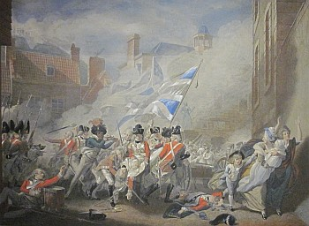

|
Jerriais, souvnous du six d'Janvi,
De chu jour memorablle,
Qui fut têmoin dans not' Jerri
D'une action admirablle.
Jerriais, souvnous de chu jour-là,
Jour d'honneur et de glouaire;
Jerriais, souvnous de chu jour-là,
Gardez-en la memouaire.
Les anciens n'furent pas coyons,
I' s' montrirent des hommes;
Montrons que lus p'tits fils sont bons,
Que lus descendants je sommes.
Jerriais, souvnous de chu jour-là,
Jour d'honneur et de glouaire;
Jerriais, souvnous de chu jour-là,
Gardez-en la memouaire.
Seyons trejous à not' dever
Et à l'amour fidèles,
Sus nous pouorront trejous compter.
L'vier Jerri et ses belles.
Jerriais, souvnous de chu jour-là,
Jour d'honneur et de glouaire;
Jerriais, souvnous de chu jour-là,
Gardez-en la memouaire.
Seyons trejous Jerriais de coeu,
Aimons tous not' patrie,
Que de notre île le bonheu
Seit le but de not' vie.
Jerriais, souvnous de chu jour-là,
Jour d'honneur et de glouaire;
Jerriais, souvnous de chu jour-là,
Gardez-en la memouaire.
A la memouaire de Peirson
Rendons honneur et louange,
Que la reconnaissance à sen nom
Parmi nous jamais n'change.
Jerriais, souvnous de chu jour-là,
Jour d'honneur et de glouaire;
Jerriais, souvnous de chu jour-là,
Gardez-en la memouaire.

Vèrsion modèrnîsée:
Lé six d'Janvyi 1781
Jèrriais, souv'n'-ous du six d'Janvyi,
Dé chu jour mêmothabl'ye,
Tchi fut têmouain dans not' Jèrri
D'eune action admithabl'ye.
Jèrriais, souv'n'-ous dé chu jour-là,
Jour d'honneur et dé glouaithe;
Jèrriais, souv'n'-ous dé chu jour-là,
Gardez-en la mémouaithe.
Les anciens n'fûdrent pas couoyons,
I' s'mouontrîdrent des hommes;
Mouontrons qué lus p'tits fis sont bouons,
Qué lus d'cendants jé sommes.
Jèrriais, souv'n'-ous dé chu jour-là,
Jour d'honneur et dé glouaithe;
Jèrriais, souv'n'-ous dé chu jour-là,
Gardez-en la mémouaithe.
Séyons tréjous à not' déver
Et à l'amour fidèles,
Sus nous pouôrront tréjous compter.
L'vièr Jèrri et ses belles.
Jèrriais, souv'n'-ous dé chu jour-là,
Jour d'honneur et dé glouaithe;
Jèrriais, souv'n'-ous dé chu jour-là,
Gardez-en la mémouaithe.
Séyons tréjous Jèrriais dé tchoeu,
Aimons touos not' patrie,
Qué dé notre île lé bonheu
Sait lé but dé not' vie.
Jèrriais, souv'n'-ous dé chu jour-là,
Jour d'honneur et dé glouaithe;
Jèrriais, souv'n'-ous dé chu jour-là,
Gardez-en la mémouaithe.
À la mémouaithe dé Peirson
Rendons honneu et louange,
Qué la r'connaissance à san nom
Parmi nous janmais n'change.
Jèrriais, souv'n'-ous dé chu jour-là,
Jour d'honneur et dé glouaithe;
Jèrriais, souv'n'-ous dé chu jour-là,
Gardez-en la mémouaithe.
|